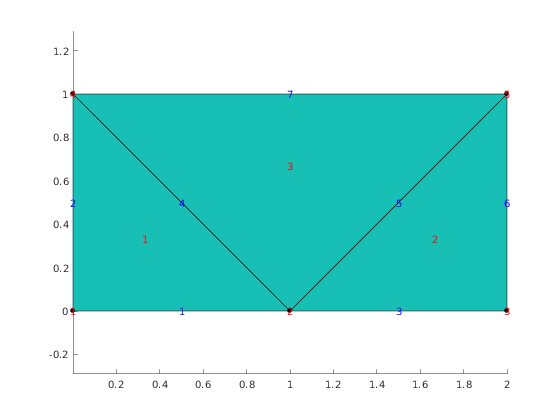

Contents
Illustrate numbering of edges in triangular elements.
In order to test various mesh utilities without resorting to GMSH, one can use MeshFactory class. The static method MeshFactory.poduce(name) generates Mesh object.
viewer = mp.Viewer();
mesh = mp.MeshFactory.produce('meshA');
viewer.show(mesh);
viewer.labelNodes()
viewer.labelElements();
viewer.labelEdges();
f2v = mesh.getAdjacency(2,0);
e2v = mesh.getAdjacency(1,0);
f2e = mesh.getAdjacency(2,1);
 Faces to vertices relation
for i=1:f2v.length; fprintf('Element %d nodes : ', i); nodes = f2v.at(i); fprintf(' %d', nodes); fprintf('\n'); end
Element 1 nodes : 1 2 4 Element 2 nodes : 2 3 5 Element 3 nodes : 2 5 4
Edges to vertices relation
for i=1:e2v.length; fprintf('Edge %d nodes : ', i); nodes = e2v.at(i); fprintf(' %d', nodes); fprintf('\n'); end
Edge 1 nodes : 1 2 Edge 2 nodes : 1 4 Edge 3 nodes : 2 3 Edge 4 nodes : 2 4 Edge 5 nodes : 2 5 Edge 6 nodes : 3 5 Edge 7 nodes : 4 5
Faces to edges relation
for i=1:f2e.length; fprintf('Element %d edges : ', i); edges = f2e.at(i); fprintf(' %d', edges); fprintf('\n'); end
Element 1 edges : 1 4 2 Element 2 edges : 3 6 5 Element 3 edges : 5 7 4
Tags of edges in faces
[edgeTags, ~, ~] = mp_face_edge_data(mesh); disp(edgeTags.Data)
1 0 1 0 1 1 0 0 0 1 0 0
Report demo status
mp_manage_demos('report', 'edges_in_triangles', true);